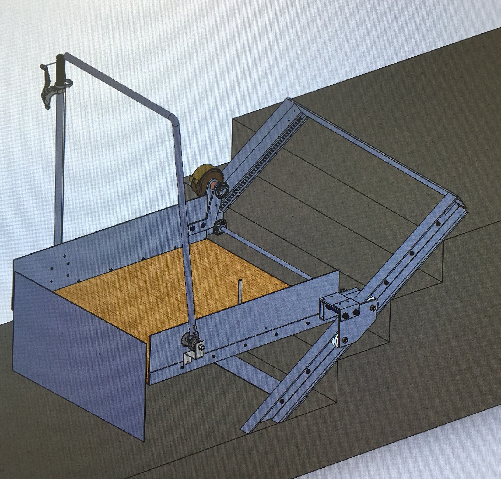
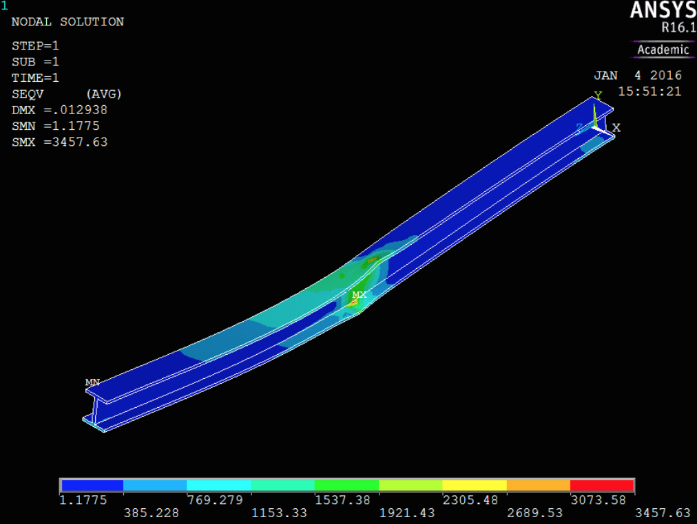
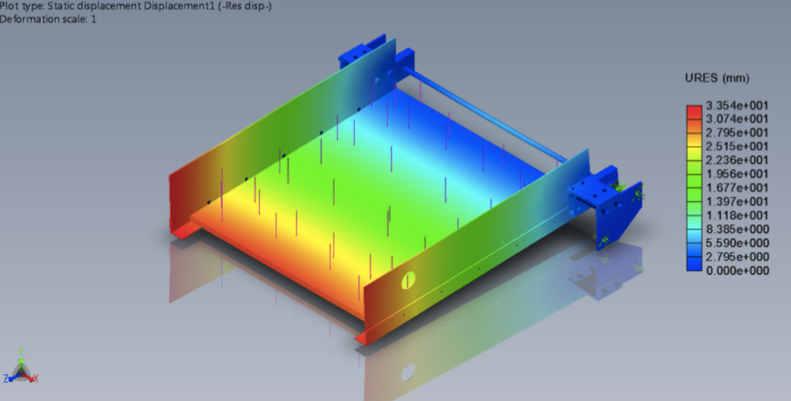
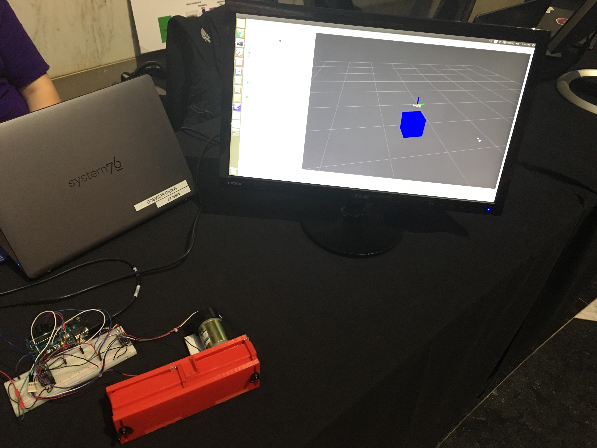
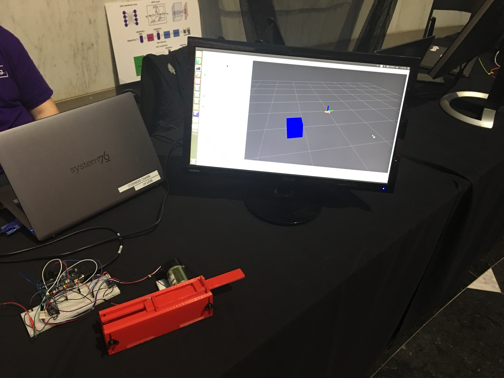

Mechanical Wheelchair Lift
Abstract
The objective of this project is to design a system that would allow a disabled person to traverse a set of stairs without aid from another individual. After completing preliminary research on all the ideas presently available, it was decided that the mechanism to be used would be a mechanical wheelchair lift. Picked due to its structural integrity, relative inexpensiveness, and straightforward design, the final system can be viewed in the image displayed here. A prototype was built and tested to yield deflection and ascension rate results. Platform deflection results exceeded standard requirements and Solidworks assembly models were used to investigate the unexpected behavior. It is hypothesized that imprecise machining led to disparities in Solidworks models and prototype assembly. Replacement of some Aluminum components with steel are proposed for future work. Although Ascension rate is satisfactory and performs according to ISO standards, additional disengaging and descent components require further testing and implementation. Considerations taken into account include: Structural analysis of components subjected to high stresses, biomechanic factors to offer optimum input from the user, and force input variations for added versatility. Concluding, the paper serves as an interim report on the manual lift endeavor with proposals for future work and research.
Modeling
The mechanism, shown here, incorporates extensive SolidWorks modeling of all the subassemblies required for the system to operate. Included are a manual brake, ramp, a mechanism to change the direction of travel, and a lever to apply forward/backward motion.
Stress Analysis
In order to ensure that the design would be capable of withstanding the stresses placed on it whe in use. Extensive FEA was performed. This includes both single part tests in Ansys as well as full assembly tests in Solidworks.
 Prototyping
|  |  |
CAD and Fabrication
In designing a prototype, the objective was to give the user a linear path on which they could explore the virtual environment. The final device presented in the image is the result. The system uses a rack and pinion in order to translate the forces of the motor onto the users finger. Although the use of gears does introduce some noise possibly affecting the perception of virtual textures, the design allows the full force of the motor to be transferred without the possiblity for slip, thus generating the possibility for stronger virtual springs and walls.
One advantage to the design introduced is the ease in building. All of the parts in the CAD model can easily be 3D printed or laser cut. With the addition of a few nuts and bolts, and an adhesive, the system can be built in less than a day.